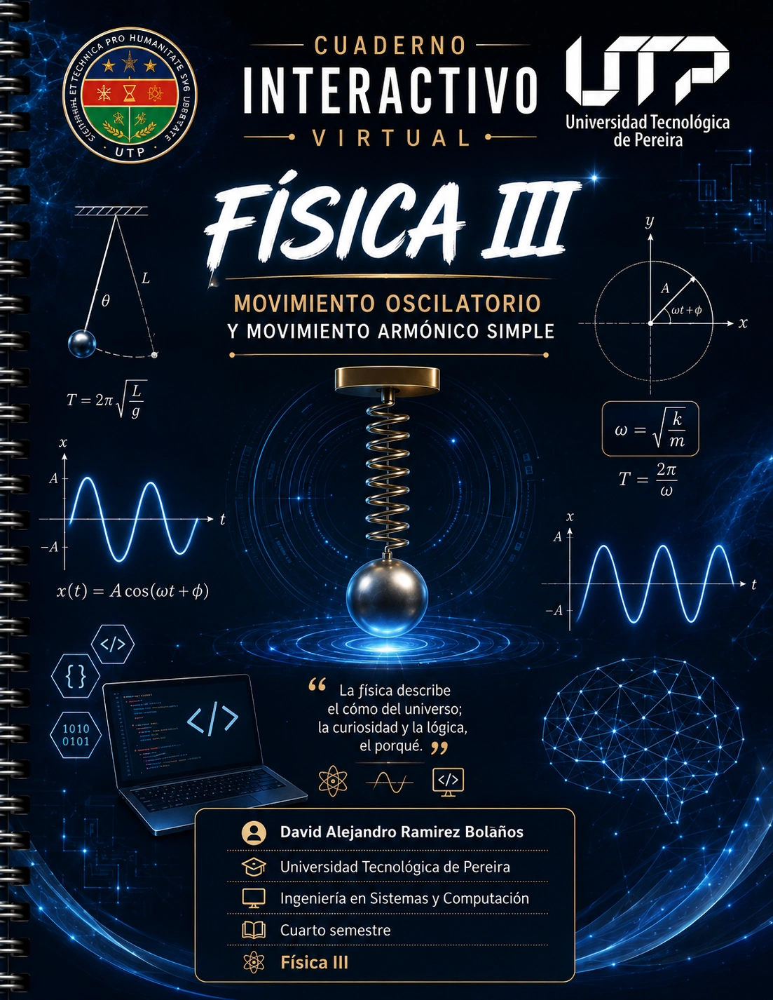

Índice General de Contenidos
Guía interactiva de aprendizaje. Selecciona cualquier sección para saltar directamente a ella.
Mapa Mental
Línea de Tiempo
Conceptos y Unidades
Demostraciones
Plano GeoGebra
Simulaciones M.A.S.
Problemas (5 Fases)
Taller Interactivo
Glosario Científico
Referencias APA 7
Taxonomía del M.A.S.: cinemática, dinámica, leyes de conservación y unidades del SI.
Evolución Histórica de las Oscilaciones
Desde las observaciones en Pisa hasta el formalismo analítico del cálculo diferencial.
Galileo Galilei (Isocronismo)
Descubrió que para amplitudes pequeñas el periodo de oscilación del péndulo depende exclusivamente de su longitud y no de su amplitud ni de su masa.
Christiaan Huygens (Reloj de Péndulo)
Patenta el reloj regulado por péndulo y demuestra en Horologium Oscillatorium que la cicloide es la curva verdaderamente tautócrona e isócrona.
Robert Hooke (Ley de Elasticidad)
Formuló "Ut tensio, sic vis": la fuerza elástica restauradora es directamente proporcional y opuesta a la deformación del resorte ($F_e = -k x$).
Isaac Newton (Principios Dinámicos)
Con su segunda ley ($\Sigma \vec{F} = m \vec{a}$) unificó las leyes del movimiento con las fuerzas recuperadoras mecánicas.
Leonhard Euler (Solución Analítica)
Resolvió analíticamente la ecuación diferencial $\ddot{x} + \omega^2 x = 0$ aplicando la identidad $e^{i\theta} = \cos\theta + i\sin\theta$.
Conceptos del Movimiento Oscilatorio
Propiedades cinemáticas y dinámicas en torno a posiciones de equilibrio estable.
Movimiento Periódico
Cumple $\vec{r}(t + T) = \vec{r}(t)$. El ciclo se repite idénticamente en intervalos sucesivos e iguales de tiempo $T$.
Movimiento Oscilatorio
Movimiento alternativo de vaivén sobre una trayectoria fija en torno a una posición de equilibrio estable ($\Sigma F = 0$).
Parámetros Primordiales
- • Elongación ($x$): Posición en el instante $t$.
- • Amplitud ($A$): Desplazamiento máximo ($A > 0$).
- • Periodo ($T$): Tiempo por ciclo ($T = 1/f$).
- • Frecuencia ($f$): Ciclos por segundo en Hertz ($\text{Hz}$).
- • Frecuencia Angular ($\omega$): $\omega = 2\pi f = \sqrt{k/m}$.
- • Fase ($\omega t + \phi$): Estado cinemático en tiempo $t$.
Tabla 1: Magnitudes Físicas y Unidades en el SI
| Magnitud | Símbolo | Definición | Unidad SI |
|---|---|---|---|
| Elongación | $x$ | $x(t) = A\cos(\omega t + \phi)$ | Metro ($\text{m}$) |
| Amplitud | $A$ | $A = |x_{\max}|$ | Metro ($\text{m}$) |
| Periodo | $T$ | $T = 2\pi/\omega$ | Segundo ($\text{s}$) |
| Frecuencia | $f$ | $f = 1/T$ | Hertz ($\text{Hz}$) |
| Frecuencia Angular | $\omega$ | $\omega = \sqrt{k/m}$ | $\text{rad/s}$ |
| Constante Elástica | $k$ | $k = -F/x$ | $\text{N/m}$ |
| Energía Mecánica | $E_m$ | $E_m = \frac{1}{2}kA^2$ | Joule ($\text{J}$) |
Demostraciones Analíticas del M.A.S.
Deducción paso a paso desde los axiomas de la mecánica clásica.
1. Ecuación Diferencial Canónica
Por Hooke ($F_x = -kx$) y la Segunda Ley de Newton ($F_x = m \frac{d^2x}{dt^2}$):
2. Solución General mediante Polinomio Característico
Planteando $x(t) = e^{rt} \implies r^2 + \omega^2 = 0 \implies r = \pm i\omega$. Aplicando la fórmula de Euler:
3. Deducción de la Velocidad Instantánea $v(t)$
La velocidad se adelanta en fase en $\pi/2 \text{ rad} = 90^\circ$ respecto a la posición.
4. Deducción de la Aceleración Instantánea $a(t)$
La aceleración está en contrafase ($\Delta\phi = \pi \text{ rad} = 180^\circ$) respecto a la elongación.
Plano Cartesiano Estilo "GeoGebra"
Cuadrícula milimetrada, marcas de regla, zoom, arrastre continuo, reescalado manual de ejes y paleta gráfica.
Laboratorio de Oscilaciones y Fasores
Modelación interactiva a 60 FPS con vectores en tiempo real y conservación de energía mecánica.
1. Oscilador Masa-Resorte
2. Fasor Rotatorio y Onda Proyectada
Problemas Resueltos Paso a Paso
Código cromático normativo: Datos (Azul), Incógnitas (Rojo), Despeje (Naranja).
• k = 200 N/m
• A = 0.12 m
• φ = 0 rad
• T = ? [s]
• v_max = ? [m/s]
• E_m = ? [J]
$$ v_{\max} = (20.00)(0.12) \implies \text{ } $$ v_max = 2.40 m/s | $$ a_{\max} = (20.00)^2 (0.12) \implies \text{ } $$ a_max = 48.00 m/s²
$$ E_m = \frac{1}{2}(200)(0.12)^2 \implies \text{ } $$ E_m = 1.44 J
Taller Interactivo de Problemas
Introduce los parámetros de tu problema. El motor didáctico formulará la solución completa aplicando las 5 fases obligatorias.
Parámetros de Entrada
Haz clic en el botón superior para generar la deducción matemática en las 5 fases normalizadas.
Glosario de Conceptos Físicos
Términos técnicos y formalismo de oscilaciones con buscador en vivo.
Amplitud ($A$)
Máxima separación respecto a la posición de equilibrio estable en metros ($\text{m}$).
Ciclo
Trayecto completo de ida y vuelta que realiza el cuerpo oscilante.
Constante Elástica ($k$)
Rigidez del resorte; fuerza recuperadora producida por deformación unitaria ($\text{N/m}$).
Desfasaje ($\Delta\phi$)
Diferencia angular entre las fases de dos magnitudes del oscilador.
Elongación ($x$)
Posición instantánea del oscilador medida desde el punto de equilibrio.
Energía Mecánica ($E_m$)
Suma constante de energía cinética y elástica: $E_m = \frac{1}{2}kA^2$.
Fasor
Vector rotatorio cuya proyección describe el movimiento armónico simple.
Frecuencia ($f$)
Oscilaciones por segundo medidas en Hertz ($\text{Hz} = 1/\text{s}$).
Frecuencia Angular ($\omega$)
Velocidad angular de fase en radianes por segundo ($\omega = \sqrt{k/m}$).
Isocronismo
Independencia del periodo respecto a la amplitud de oscilación.
Ley de Hooke
Fuerza restauradora proporcional a la deformación: $\vec{F}_e = -k\vec{x}$.
Periodo ($T$)
Tiempo necesario para completar un ciclo completo en segundos ($\text{s}$).
Referencias Bibliográficas (APA 7)
Tratados y manuales canónicos de física universitaria normalizados bajo normas APA 7.ª edición.
Contraportada y Créditos Académicos
Registro de cátedra y culminación del módulo interactivo de oscilaciones mecánicas.
FÍSICA III: ONDAS Y OSCILACIONES
Cuaderno Digital Científico e Interactivo
Este cuaderno interactivo integra rigor conceptual, demostraciones analíticas formales paso a paso, representaciones gráficas dinámicas estilo GeoGebra y simuladores físicos en tiempo real.
- David Alejandro Ramirez Bolaños
- Steven Vélez Garces
- Edwin Santiago Pelaez Osorio
• Asignatura: Física III (Ondas y Oscilaciones)
• Formato: Cuaderno Digital Multiplataforma (PWA)
• Edición: 2026 • Versión 2.5